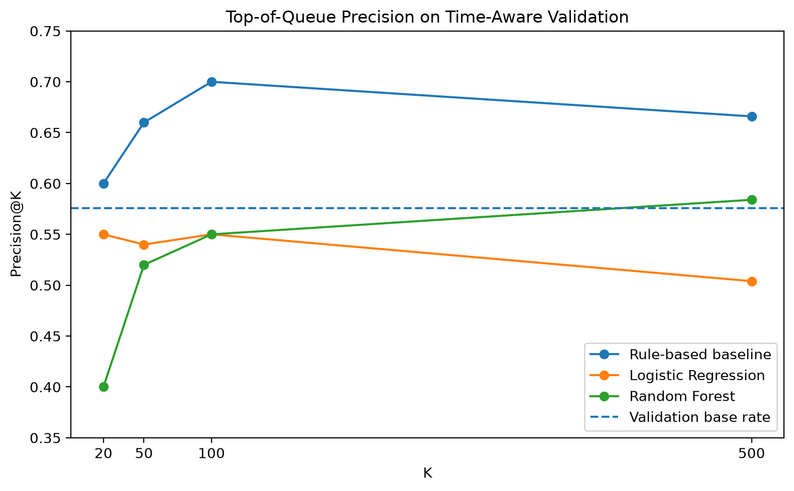

Can Historical Search Signals Predict Next-Month Content Decline?
A proactive content review framework using time-aware validation and approximately 78.8 million daily search-performance records.
Abstract
This study investigates whether historical search-performance signals can be used to identify currently visible content that is more likely to experience a meaningful decline in the following month. The analysis uses the FlyRank internship warehouse, containing approximately 78.8 million daily content-performance records spanning late January 2025 through June 2026. A transparent rule-based baseline was compared with Logistic Regression and Random Forest using a time-aware validation design and four search-performance features: impressions, clicks, average position, and click-through rate. Logistic Regression achieved the highest ROC-AUC at 0.588, but the rule-based baseline performed better at the top of the review queue, reaching Precision@100 of 0.70 compared with 0.55 for both learned models. The final framework therefore uses the rule-based ranking as the primary mechanism for prioritizing content for human review, while treating model scores as secondary decision-support signals rather than automated recommendations.
1. Introduction / Problem Statement
Search performance can change substantially over time. For teams managing many existing content items, this creates a practical problem: it is difficult to know which pages deserve attention first.
Reviewing every page manually is inefficient. A useful system therefore needs to reduce a large content inventory into a smaller ranked queue that human reviewers can inspect.
The goal is to use this prediction to help determine which already-visible content should be reviewed first for possible refresh, protection, or continued monitoring.
The system is not intended to automatically rewrite or modify content, explain why search rankings change, or establish that a particular search metric causes future decline. Instead, it is designed as a decision-support tool that helps prioritize human review.
Because the operational goal is to identify a relatively small number of high-priority items, performance is evaluated using both ROC-AUC and top-of-queue metrics such as Precision@K.
2. Data
This project uses the FlyRank internship warehouse, build
v20260703. The primary source is the
fact_content_daily_performance table, which contains
daily search-performance measurements for pseudonymized clients and
content items.
The warehouse contains approximately 78.8 million daily performance
records spanning late January 2025 through June 2026. The
dim_clients table is also used to verify when historical
search data becomes available for each client.
The modeling design uses search-performance signals from one month to predict whether the same content item experiences a meaningful decline during the following month. Historical monthly pairs beginning in February 2025 are used for model development, while the April 2026 to May 2026 transition is reserved as the primary time-aware validation period.
Only content items with at least 200 impressions during the feature month are included. This threshold focuses the analysis on content with meaningful current search visibility rather than extremely low-volume items.
Clients without a full month of available historical search data are excluded for the corresponding feature period.
GA4-based features are intentionally excluded from the final model because analytics availability is incomplete across the warehouse. Excluding them avoids treating unavailable measurements as genuine zero engagement.
Client and content identifiers are used only for grouping and joining records. They are not predictive features. No client names, content URLs, or private search queries are included in this public analysis.
3. Methodology
Prediction target
The task is framed as a combined binary classification and ranking problem. For every eligible content item, search-performance signals from a feature month are used to estimate the risk of meaningful decline in the subsequent month.
The binary target, is_declining, is equal to 1 when
average daily impressions during the outcome month fall below 80%
of average daily impressions during the feature month.
This label is a practical proxy for performance decline. It should not be interpreted as proof that a page requires a refresh.
Features
Four historical search-performance features are used:
- Monthly impressions
- Monthly clicks
- Average search position
- Click-through rate (CTR)
Client identifiers, content identifiers, future outcome metrics, and target-derived variables are excluded from the feature set.
Rule-based baseline
A transparent heuristic is used as the primary baseline. Eligible content must have at least 200 feature-month impressions. Content with an average search position worse than 10 is flagged for review, and qualifying items are ranked in descending order of impression volume.
This rule represents a simple operational idea: content that already receives meaningful visibility but is not currently positioned in the top 10 may deserve earlier human attention.
Machine-learning models
Two supervised models are evaluated against the heuristic: Logistic Regression and Random Forest.
Logistic Regression provides a comparatively simple and interpretable learned model. Random Forest is included to test whether nonlinear relationships and feature interactions improve predictive performance.
Validation design
The primary evaluation uses a time-aware split. Models are trained only on historical month pairs preceding the validation horizon, and April 2026 features are evaluated against outcomes observed in May 2026.
A random split was also examined as an audit, but it is not used as the main reported evaluation because random mixing of observations across time can produce overly optimistic estimates for a forward-looking prediction problem.
Leakage controls
The feature set was audited to ensure that future outcome information, the target variable, and client/content identifiers were not provided to the models as predictors.
4. Results
All three approaches were evaluated on the same April 2026 to May 2026 time-aware validation split. The proportion of eligible validation observations labeled as declining was 57.6%.
Logistic Regression
Rule-based baseline
Logistic Regression achieved the highest overall ROC-AUC at 0.588, compared with 0.554 for the rule-based baseline and 0.539 for Random Forest.
However, ROC-AUC is not the only relevant metric for this task. The intended use case is to prioritize a limited number of content items for human review, making performance at the top of the ranked queue particularly important.
| Method | ROC-AUC | P@20 | P@50 | P@100 | P@500 |
|---|---|---|---|---|---|
| Rule-based baseline | 0.554 | 0.60 | 0.66 | 0.70 | 0.666 |
| Logistic Regression | 0.588 | 0.55 | 0.54 | 0.55 | 0.504 |
| Random Forest | 0.539 | 0.40 | 0.52 | 0.55 | 0.584 |

5. Limitations & Honest Framing
Several limitations should be considered when interpreting these results.
First, is_declining is a proxy for review priority. A
decrease in average daily impressions does not necessarily mean that
a page requires a content refresh, and the target does not identify
the underlying reason for the decline.
Second, the final feature set intentionally contains only four historical search-performance signals. Content quality, topical change, seasonality, competitor activity, previous content updates, and other external factors are not represented.
Third, the primary reported evaluation is based on one held-out temporal transition from April 2026 to May 2026. Performance may vary during other periods because the prevalence and characteristics of decline can change over time.
The monthly modeling pipeline uses an inner join between feature and outcome periods. A direct validation check found that all 362,172 content items observed in April 2026 were also present in May 2026, so no April items were excluded because of this join during the primary evaluation period.
Most importantly, this analysis is observational. The measured relationships are predictive associations, not causal effects. The results do not establish that any search metric causes future decline, and they do not demonstrate that refreshing a highly ranked page will improve future performance.
The output should therefore be interpreted only as decision support for human review.
6. Ranked Recommendations
The experimental results support retaining the transparent rule-based heuristic as the primary mechanism for constructing the review queue.
1. Review for refresh
Content with meaningful search visibility and an average search
position worse than 10 should be considered for
review_for_refresh.
Within this group, content should be ranked by descending impression volume so that higher-visibility opportunities receive attention first.
Reason code:
visible_but_not_top10.
2. Protect and monitor
Eligible content currently ranking within the top 10 should be
categorized as protect_and_monitor.
These items already demonstrate comparatively strong search positioning and do not satisfy the primary review rule.
Reason code:
strong_current_position.
3. Keep learned-model scores secondary
Logistic Regression and Random Forest scores may be retained as exploratory signals, but they should not determine the final queue order under the current validation evidence.
The learned approaches did not outperform the heuristic at the top of the validation queue, where review capacity is most limited.
4. Require human review
No ranked result should directly trigger automatic rewriting, publishing, deletion, or modification of content.
The queue identifies candidates for investigation. The final editorial decision should remain with a human reviewer who can consider page context that is not represented by the model.
7. Reproducibility
The analysis code, notebook, methodology, validation results, and supporting artifacts are available in the public project repository.
- GitHub repository: github.com/eminamandzukic/FlyRank_starter
- Capstone notebook: work/notebooks/capstone.ipynb
The notebook documents the research question, data filters, target definition, feature set, baseline, model comparison, validation design, leakage controls, limitations, recommendations, and paper artifacts.
Access to the underlying internship warehouse requires appropriate authorization. Authentication credentials are requested at runtime and are not stored in the notebook or this webpage.
Randomized model components use a fixed random seed where applicable. The primary conclusions are based on the time-aware April 2026 to May 2026 validation split reported above.
8. Acknowledgments & Data Credit
Built on the FlyRank ML Internship dataset .
The dataset was used exclusively in pseudonymized form for this analysis. Public outputs intentionally exclude client names, page URLs, private search queries, and other identifying information.